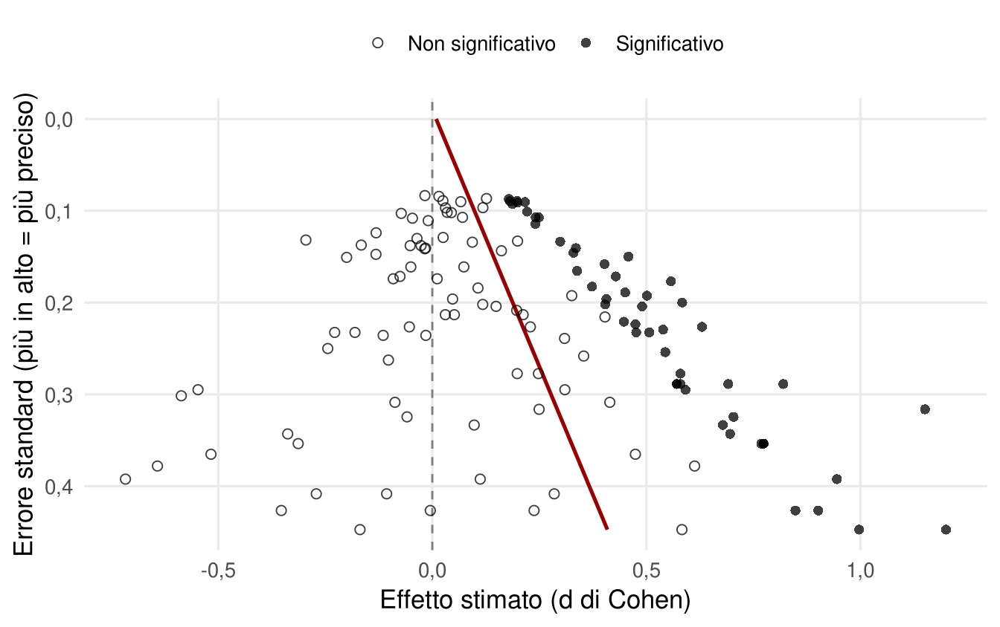
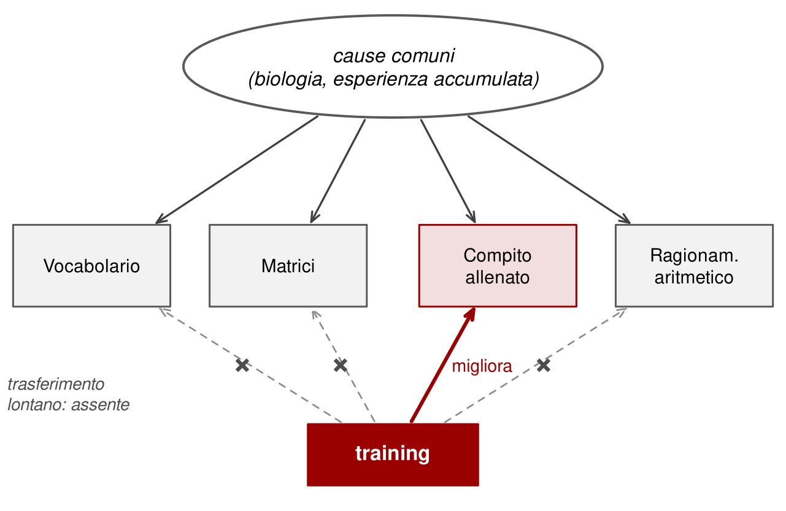

14 Si può potenziare l’intelligenza?
Le differenze di intelligenza sono fortemente ereditabili e il QI è molto stabile dalla preadolescenza in poi. Eppure l’effetto Flynn mostra che le prestazioni cognitive di intere popolazioni possono crescere di molto. Ne nasce una domanda pratica: possiamo fare qualcosa, attivamente, per aumentare l’intelligenza di una persona?
La risposta breve è: sì, ma poco, e solo in certe circostanze. Guadagni ampi sono possibili soprattutto quando si interviene su bambini che vivono in condizioni di forte deprivazione. Per chi vive già in un ambiente favorevole, interventi come programmi prescolari aggiuntivi o giochi di allenamento cerebrale producono di solito effetti minimi o temporanei (Warne, 2020). La risposta lunga è più interessante, perché mostra come una letteratura scientifica possa produrre per anni risultati entusiasmanti che poi si dissolvono.
14.1 Effetti sicuri: la scuola
L’intervento più efficace che conosciamo è anche il più banale: andare a scuola. Più anni di istruzione si associano a QI più alti, e almeno in parte la relazione è causale. Una meta-analisi ha raccolto tre tipi di studi che permettono di avvicinarsi a una stima causale: studi longitudinali che controllano il QI misurato prima; studi che confrontano bambini nati a pochi giorni di distanza ma finiti in anni scolastici diversi a causa della data limite di iscrizione; studi su riforme che hanno allungato l’obbligo scolastico. La stima è di un aumento fra uno e cinque punti di QI per ogni anno di scuola in più (Ritchie & Tucker-Drob, 2018).
Non tutto è chiaro. Non sappiamo se l’effetto si cumuli in modo lineare per molti anni, né se riguardi l’abilità generale o soprattutto abilità specifiche. Uno studio longitudinale suggerisce la seconda ipotesi (Ritchie et al., 2015). Sembra che l’unica area priva di effetti apprezzabili sia la velocità di elaborazione. Ma una conclusione pratica è solida: la scuola non serve solo a trasmettere conoscenze. Aumenta le capacità con cui le si acquisisce.
14.2 Effetti sicuri: deprivazione e cura
Il secondo insieme di evidenze riguarda l’altro estremo: che cosa succede quando l’ambiente manca di cure di base. Una meta-analisi di 75 studi su quasi quattromila bambini cresciuti in istituti in 19 paesi ha trovato un QI medio attorno a 84, contro circa 104 dei coetanei cresciuti in famiglia. Il ritardo era maggiore per i bambini istituzionalizzati prima dei 12 mesi e nei paesi meno sviluppati (van IJzendoorn et al., 2008).
Uscire da queste condizioni verso un ambiente emotivamente e cognitivamente più ricco produce recuperi notevoli. Già negli anni Trenta Harold Skeels documentò aumenti di decine di punti in bambini trasferiti da un orfanotrofio a contesti più stimolanti (Skeels, 1966). L’adozione, in generale, è associata a un recupero sostanziale rispetto ai bambini rimasti nelle condizioni d’origine (van IJzendoorn et al., 2005). In uno studio svedese su fratelli separati, quelli adottati in famiglie con livello di istruzione più elevato avevano in media circa quattro punti di QI in più dei fratelli rimasti con i genitori biologici (Kendler et al., 2015).
Sono risultati importanti. Mostrano che ambienti molto diversi producono intelligenze diverse. Ma non sono facilmente traducibili in un intervento: non si può proporre l’adozione come trattamento.
14.3 Effetti probabili: interventi precoci in contesti svantaggiati
Si può allora portare il buon ambiente al bambino? Negli Stati Uniti, a partire dagli anni Sessanta, diversi progetti hanno offerto a bambini di famiglie molto povere servizi prescolari di alta qualità, spesso insieme a sostegno alle madri, cure mediche e pasti regolari. Alcuni, come il Carolina Abecedarian Project e il Perry Preschool Project, avevano un disegno sperimentale con assegnazione casuale.
I risultati iniziali erano promettenti: guadagni di diversi punti di QI, talvolta più di dieci, all’ingresso nella scuola primaria. Poi è arrivato il fadeout: negli anni successivi la differenza fra bambini trattati e di controllo si riduceva, fino a scomparire o quasi (Campbell et al., 2002). Le meta-analisi degli studi randomizzati su interventi prescolari confermano lo schema: guadagni iniziali di alcuni punti, persi in gran parte entro pochi anni dalla fine dell’intervento (Protzko, 2015).
Questi studi lasciano alcuni punti fermi.
- Gli interventi funzionano meglio se precoci, in età prescolare.
- L’effetto sul QI svanisce quando l’intervento finisce. Per mantenerlo, l’ambiente migliore dovrebbe proseguire.
- Gli studi più recenti trovano effetti più piccoli di quelli storici. Una possibile ragione è che i contesti svantaggiati di oggi sono meno svantaggiati di allora: vaccinazioni, alimentazione e controlli medici, che i vecchi programmi includevano, sono ormai più accessibili a tutti (Duncan & Magnuson, 2013).
- Alcuni programmi hanno avuto effetti di lungo periodo su esiti diversi dal QI: più anni di istruzione, reddito più alto, meno reati. Per questo sono stati considerati economicamente vantaggiosi anche se il guadagno cognitivo era svanito (Heckman et al., 2010).
14.4 Effetti improbabili: la ricerca del Santo Graal
Da più di trent’anni ricercatori e aziende cercano un modo per aumentare l’intelligenza con attività comuni, senza cambiare drasticamente la vita di nessuno: ascoltare musica, allenarsi con giochi al computer, giocare a scacchi o ai videogiochi, prendere una pillola. Tre storie illustrano come è andata.
14.4.1 L’effetto Mozart
Nel 1993 uno studio su 36 studenti universitari riportò che dieci minuti di ascolto di una sonata di Mozart miglioravano la prestazione in alcune prove di ragionamento spaziale (Rauscher et al., 1993). L’effetto, se reale, era piccolo e durava pochi minuti. Ma la notizia fece il giro del mondo. Negli anni successivi lo stato della Georgia finanziò la distribuzione di dischi di musica classica a ogni neonato, e la Florida raccomandò musica classica nei servizi per l’infanzia.
Le repliche fallirono o diedero risultati contraddittori, spesso giustificati con dettagli sulla scelta dei brani anziché con l’ammissione che l’effetto era fragile. Una meta-analisi di circa 40 studi e oltre 3.000 partecipanti ha concluso che non esiste alcun effetto specifico di Mozart né della musica: si osserva solo un modesto miglioramento immediato dopo una stimolazione piacevole, compatibile con un aumento dell’attivazione e del buonumore, insieme a forti segni di pubblicazione selettiva (Pietschnig et al., 2010; Thompson et al., 2001).
E chi fa musica per anni? I musicisti esperti ottengono in media punteggi un po’ più alti in diverse prove cognitive (Talamini et al., 2017). Un recente studio condotto in decine di laboratori di molti paesi, con circa 600 musicisti e altrettanti controlli, ha trovato vantaggi in molte prove, dalla memoria al vocabolario alle matrici (Grassi & Talamini, 2025). Una rianalisi con variabili latenti suggerisce che il quadro corrisponda soprattutto a un vantaggio di quasi mezza deviazione standard nel fattore generale, più un forte vantaggio specifico nella memoria per le melodie (Toffalini & Feraco, 2026). Non è chiaro se sia la musica a causare il vantaggio o il vantaggio a favorire chi sceglie di diventare musicista. È chiaro però che non è un trattamento: è uno stile di vita. Le meta-analisi sugli interventi musicali di breve durata nei bambini non trovano benefici cognitivi o scolastici apprezzabili, una volta considerata la qualità degli studi (Sala & Gobet, 2020).
14.4.2 I training di memoria di lavoro
La seconda storia è più seria, perché aveva una teoria. Molti psicologi cognitivi hanno pensato che g dipendesse da un processo di base, come la memoria di lavoro o il controllo esecutivo. Se l’intelligenza fluida richiede di mantenere e manipolare regole in memoria di lavoro, allenando la memoria di lavoro si dovrebbe migliorare l’intelligenza fluida.
Nel 2008 uno studio molto citato riportò che alcune settimane di allenamento con un compito di memoria di lavoro, il dual n-back, miglioravano i punteggi in una prova di matrici (Jaeggi et al., 2008). Altri studi riportarono miglioramenti nei sintomi di ADHD dopo un allenamento simile (Klingberg et al., 2005). Seguirono un’ondata di ricerche e un’industria dell’allenamento cerebrale che ha promesso di migliorare lo studio, il lavoro, la salute mentale e di contrastare il declino cognitivo (Simons et al., 2016). Nel frattempo si sono diffusi anche i videogiochi d’azione, presentati come allenamento per attenzione e velocità.
Le meta-analisi hanno ridimensionato tutto. Gli allenamenti migliorano molto la prestazione nel compito allenato e, in misura minore, in compiti simili: è il trasferimento vicino. Ma il trasferimento lontano, verso abilità diverse, è minimo o nullo (Melby-Lervåg et al., 2016; Sala & Gobet, 2017). Lo stesso vale per scacchi, musica e videogiochi (Sala et al., 2018). Già nel 2010 un esperimento online con oltre diecimila partecipanti aveva trovato miglioramenti solo nei compiti allenati (Owen et al., 2010).
Perché la letteratura iniziale era così ottimista? Per una combinazione di problemi metodologici ricorrenti.
- Controlli passivi. Il gruppo allenato riceveva attenzione, aveva aspettative di miglioramento, si familiarizzava con le prove. Il gruppo di controllo aspettava. Senza un controllo attivo, che svolga un’attività di pari impegno e creda anch’esso di essere allenato, ogni differenza può derivare da motivazione e aspettative.
- Abbandoni selettivi. Chi non era motivato abbandonava il training più spesso di chi aspettava, lasciando nel gruppo allenato i più motivati.
- Flessibilità analitica. Molte misure, molte analisi possibili, pochi studi preregistrati: le possibilità di trovare qualcosa di «significativo» per caso erano altissime.
- Pubblicazione selettiva. Gli studi con risultati significativi venivano pubblicati più facilmente di quelli nulli.
L’ultimo problema lascia una traccia riconoscibile (Figura 14.1). Se si pubblicano soprattutto i risultati significativi, gli studi piccoli, che hanno stime imprecise, entrano in letteratura solo quando trovano effetti grandi. Gli studi grandi, più precisi, riportano effetti piccoli. Il risultato è un’asimmetria: l’effetto stimato cresce al diminuire della precisione. Esistono metodi per correggere la distorsione, stimando l’effetto che avrebbe uno studio infinitamente preciso.
Una volta corretta la pubblicazione selettiva e considerati solo gli studi con controlli attivi, il trasferimento lontano di qualsiasi tipo di allenamento cognitivo risulta praticamente nullo (Gobet & Sala, 2023). Nel 2016 la Federal Trade Commission statunitense ha multato una nota azienda di giochi di allenamento cerebrale per pubblicità ingannevole: prometteva di migliorare il rendimento scolastico e lavorativo e di proteggere dal declino cognitivo, senza prove adeguate (Federal Trade Commission, 2016).
14.4.3 Pillole e stimolazione
Nicotina e psicostimolanti, come quelli usati per l’ADHD, possono migliorare in acuto alcune prestazioni, soprattutto in attenzione e memoria di lavoro. Negli adulti sani gli effetti sono modesti e non modificano stabilmente l’abilità generale (Ilieva et al., 2015). Per chi ha un ADHD questi farmaci possono essere molto utili; come potenziatori dell’intelligenza nelle persone sane, no. Considerazioni simili valgono per le tecniche di stimolazione cerebrale non invasiva: alcune promesse, pochi effetti replicati su campioni ampi, di solito su funzioni specifiche e non sull’abilità generale. Oggi non esiste una pillola dell’intelligenza. Che non possa esistere in futuro è un’altra affermazione, e nessuno è in grado di dimostrarla.
14.5 Perché allenare una parte non migliora il tutto
Il fallimento dei training cognitivi è una delusione, ma era prevedibile. Attenzione però a come lo si spiega. Si dice spesso che nel modello gerarchico le frecce vanno dal fattore generale alle abilità specifiche, e che quindi l’effetto di un allenamento non può risalire (Warne, 2020). L’argomento vale solo se si prende il modello alla lettera, come un meccanismo che opera dentro ogni persona. Ma g, come si è visto, è il riassunto statistico di molte cause comuni, non un organo con un’uscita e un’entrata.
L’argomento più solido è un altro. Se le prove correlano perché dipendono dalle stesse cause comuni, migliorare una prova senza toccare quelle cause lascia intatto tutto il resto. Allenarsi al dual n-back rende più bravi nel dual n-back: cambia strategie e familiarità con un compito, non la biologia o l’esperienza accumulata che sostengono anche il vocabolario e le matrici. Ed è esattamente ciò che i dati mostrano. Chi ha promesso il contrario ha confuso la prestazione in un compito con la capacità che quel compito dovrebbe misurare. La Figura 14.2 riassume l’argomento.

Gli interventi che spostano davvero i punteggi, come la scuola o l’uscita da una deprivazione grave, sono invece cambiamenti ampi, che agiscono su molte cause insieme; quanto del guadagno riguardi g, e quanto abilità specifiche, resta discusso.
I risultati positivi, del resto, raccontano la stessa storia in forma opposta. Ciò che aumenta davvero le capacità cognitive sono cambiamenti ampi e duraturi dell’ambiente: anni di scuola, uscita da una deprivazione grave, una vita intera dedicata a un’attività complessa. Costano molto più di un’applicazione sul telefono, e funzionano.